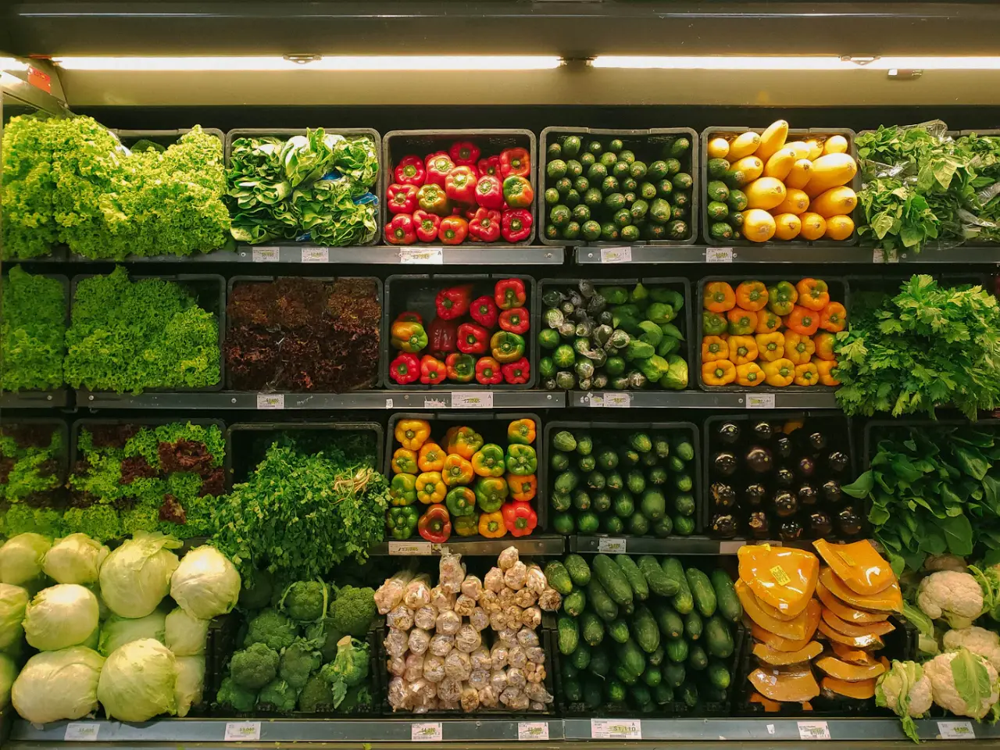
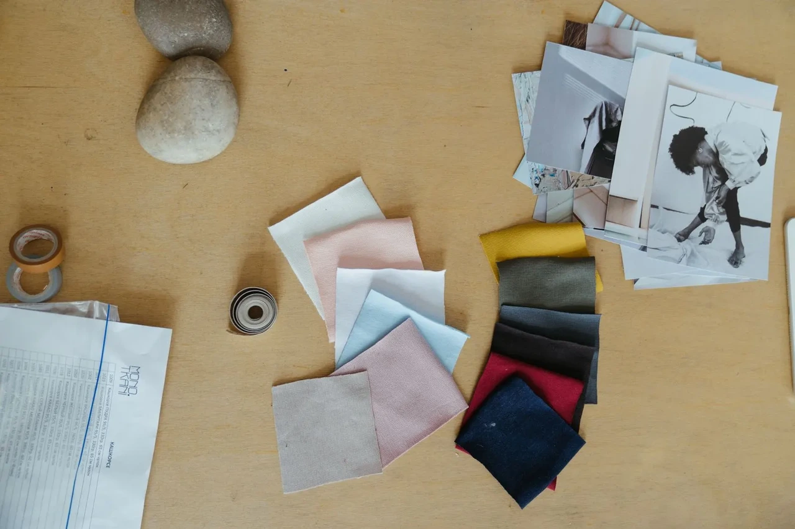
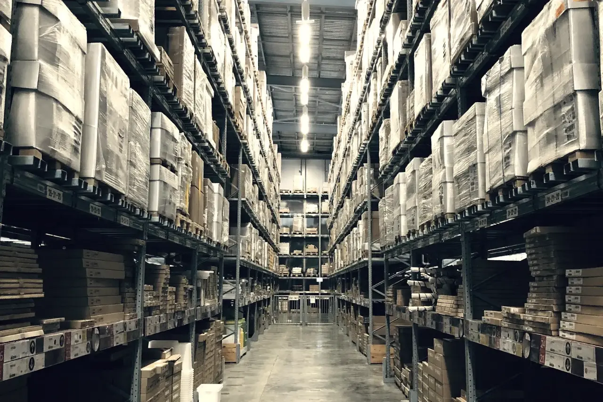
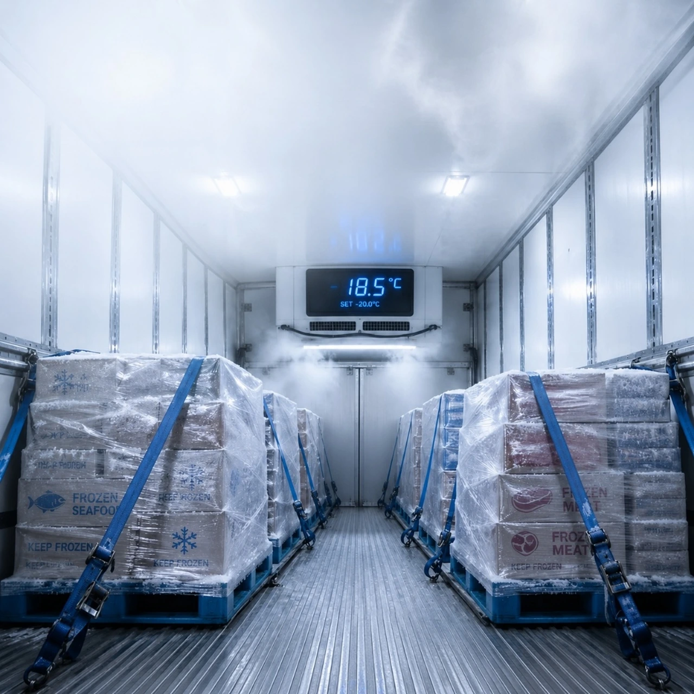
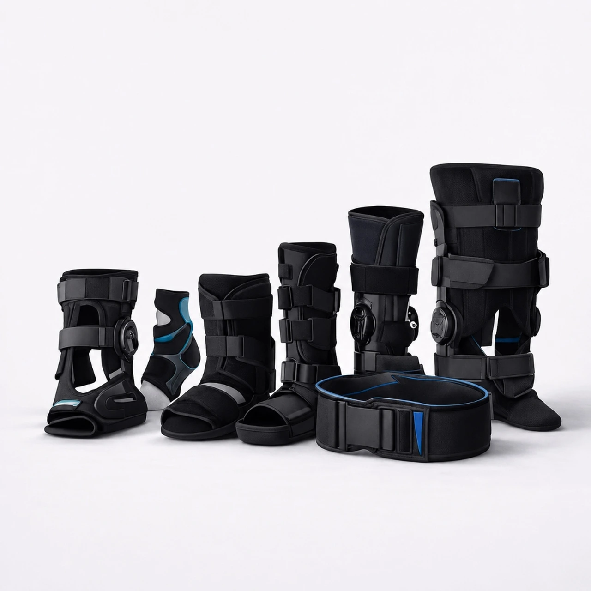

Industry Verticals
Specialized Logistics for Bangladesh Export & Global Industries
Eleven industry verticals, one standard of care — deep expertise in the cargo that moves through our home markets, handled with the specific attention each industry demands.
Fashion Focused
Fashion & Retail
From Bangladesh — one of the world’s leading apparel sourcing markets — we move fashion cargo with the specialized handling it demands: Garments on Hanger (GOH), carton consolidation and DC-ready deliveries.
Seasonal peaks, buyer routing guides and retail deadlines are our daily business.

Consumer Goods
FMCG & Food Products
Fast-moving consumer goods run on tight replenishment cycles. We keep shelves stocked with dependable transit times and careful cargo handling.
For perishables and frozen foodstuffs, our reefer capability maintains the cold chain from origin to destination.
Healthcare & Pharma
Medical & Pharmaceutical Supplies
When the cargo is medical, reliability is non-negotiable. We move medical supplies and pharmaceuticals with priority uplift, documentation accuracy and proactive monitoring.
Compliant, dependable transport — because these shipments matter more than most.

Textile Supply Chain
Textile & Garments
Bangladesh’s textile chain moves in both directions — inbound fabrics, yarn and accessories feeding the mills, and outbound finished garments heading to buyers worldwide. We handle both legs.
Production calendars leave no room for delay; our consolidation programs keep inputs and outputs moving to schedule.

The Golden Fibre
Jute & Jute Products
From raw jute and yarn to bags and eco-friendly packaging, we ship the golden fibre in bulk, breakbulk and containerised loads to buyers across the globe.
Decades of familiarity with jute’s weight, moisture sensitivity and stowage requirements keep this heritage cargo moving safely.
Leather & Footwear
Leather & Leather Goods
Finished leather, footwear, bags and fashion accessories are high-value, presentation-critical cargo. We move them with secure stowage and meticulous documentation.
From tannery consolidation to retail DC delivery, our teams understand the standards leather buyers expect.
High-Value Cargo
Electronics & Consumer Appliances
Consumer electronics, home appliances and components demand shock-safe handling, secure warehousing and a tight chain of custody. We provide all three.
Priority air uplift for launches and urgent replenishment; sea freight for volume — routed to match product value and urgency.
Project Logistics
Industrial Machinery & Engineering Equipment
Heavy machinery, factory equipment and project cargo call for engineered moves — lift plans, route surveys, flat racks and open tops.
From a single urgent spare part flown out overnight to complete production lines shipped as project cargo, we plan each move end to end.
Beauty & Personal Care
Hair Wigs & Beauty Products
Bangladesh has emerged as a premier global manufacturing hub for premium human hair wigs, toupees, extensions and cosmetic accessories. We provide specialized logistics that protect these delicate, high-value consignments from environmental degradation, humidity and transit delays.
From factory floor collection and bonded warehousing to buyer consolidation and expedited global air or ocean freight, our specialized teams coordinate seamless customs documentation and direct routing to beauty distributors and salons worldwide.

Food & Perishables
Frozen Foods
Frozen foods require reliable temperature control, careful handling and disciplined coordination across the supply chain. We manage each shipment with a strong focus on product integrity, transit reliability and timely delivery.
From seafood and meat to processed and packaged frozen products, we coordinate the right combination of ocean, air, inland transportation, cold-chain handling and secure storage based on the shipment’s requirements.

Healthcare & Rehabilitation
Orthopedic Items
Orthopedic appliances, support braces, walking boots and rehabilitation devices require precision handling, clean and moisture-guarded stowage, and disciplined supply chain scheduling. We ensure every consignment moves safely from manufacturing facilities to hospitals, clinics and global distributors.
Whether managing scheduled volume shipments via ocean freight or priority air cargo for urgent medical replenishment, our teams provide tailored consolidation, proactive tracking and complete documentation support.
Your industry, our expertise
Talk to us about the specific requirements of your cargo — we’ve likely moved it before.